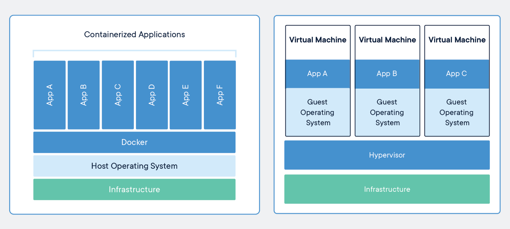

After taking a look at each of these technologies, the question is, which one should be used? The answer is that it depends on several different points. Essentially, each business and application will have different needs, requirements, and purpose. The choice of virtualization versus containerization depends on the business development and operational model, and the way applications are written and produced. Both are software technologies that create self-contained virtual packages, but to choose the one that will best suit the user’s needs, we will look at the following points.
Speed: When it comes to speed, containers were meant to significantly reduce the time needed to deploy and run an application. The container starts immediately, since the operating system is already up and running, so the application will start up without any noticeable delay. This is an excellent solution for a development environment, mainly, as it saves time in the application testing cycle. On the other hand, virtual machines need to start the entire operating system, which includes the full boot process. This will also include the startup of the services, and it will take much longer than it would for a container.
Resources: Since virtual servers run separate operating systems, and every system call has to go through the virtualization layer, a certain amount of overhead is created, causing more resources to be used. This is particularly true for memory usage, as virtual machines consume memory even when they aren’t running any user processes. However, CPU virtualization is relatively cheap, so the CPU overhead of a virtual machine can be much smaller. When it comes to containers, they can start up pretty quickly, so their memory consumption doesn't increase. There is also much less overhead as they are using the same operating system without a hypervisor to go through.
Operating system requirements: A virtual machine is best used in the case when a business needs to run multiple applications that require the full functionality of a dedicated operating system. However, if most of the applications have the same operating system requirements, the containers would be a much more practical solution.
To summarize, we can see that each technology serves a different purpose and that choosing one depends heavily on the user and application needs and server capacity. Since both virtualization and containerization come with significant advantages and drawbacks, choosing one over the other needs to be done carefully with these points in mind.
For detailed summary, please visit here